ILLUSTRATION: תקליט ועטיפה עם כיתוב עברי כחול וגלי
ILLUSTRATION: תקליט ועטיפה עם כיתוב עברי כחול וגלי CO BLANCHE: כרטיסי מבקר לפסטיבל CO BLANCHE פרושים במניפה, עם תצלומים מטושטשים בשחור-לבן
CO BLANCHE: כרטיסי מבקר לפסטיבל CO BLANCHE פרושים במניפה, עם תצלומים מטושטשים בשחור-לבן VINTAGE COLLAGE: קולאז' של ילדה בסגנון וינטג' שופכת מבקבוק ענק על איגלו מושלג עם גולשי סקי זעירים
VINTAGE COLLAGE: קולאז' של ילדה בסגנון וינטג' שופכת מבקבוק ענק על איגלו מושלג עם גולשי סקי זעירים SPIN 90: פוסטר שחור עם אות לבנה מטושטשת המסתובבת לכדי טבעת, ממוסגרת בקווי מתאר דקים
SPIN 90: פוסטר שחור עם אות לבנה מטושטשת המסתובבת לכדי טבעת, ממוסגרת בקווי מתאר דקים MOON APP: שני טלפונים חכמים עם מסכי אפליקציית MOON, כרטיסי אמנים וכפתור לרכישת כרטיסים
MOON APP: שני טלפונים חכמים עם מסכי אפליקציית MOON, כרטיסי אמנים וכפתור לרכישת כרטיסים

היי! אני מאיה קליינר
מעצבת וצלמת. העבודה שלי חוקרת את המפגש בין טיפוגרפיה, תנועה ומשמעות: עיצוב נקי ונועז שמעביר רעיונות דרך צורה מדויקת, ניגודיות וצבע. התהליך היצירתי שלי מתמקד בחשיבה קונספטואלית ובפיתוח שפה חזותית ייחודית לכל פרויקט, במטרה ליצור זהויות שמדברות בבהירות, בתבונה וברגש.